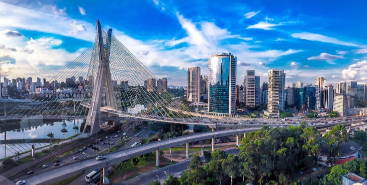
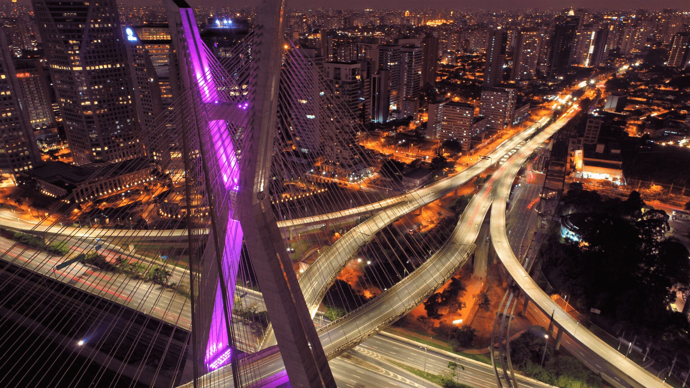
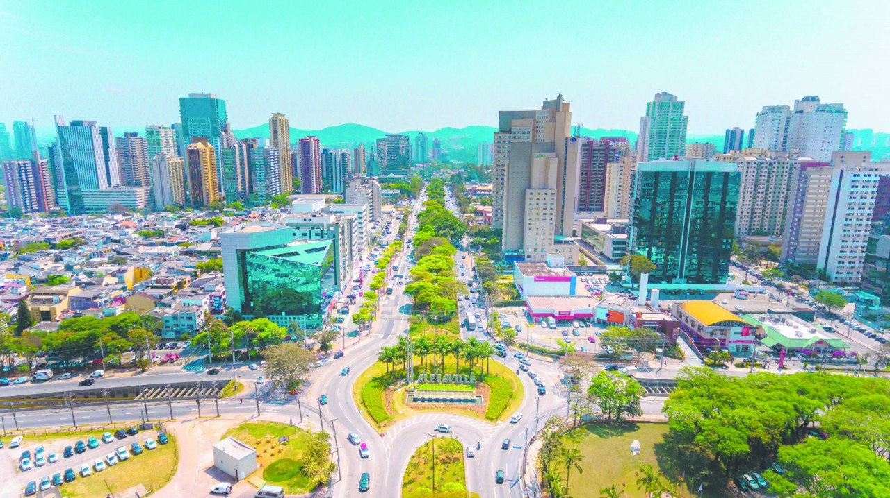
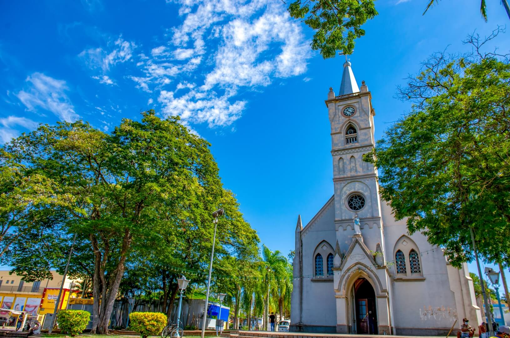
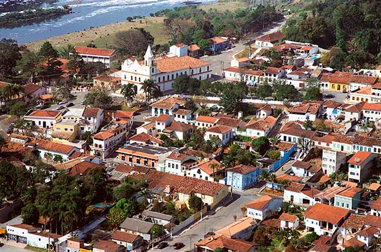
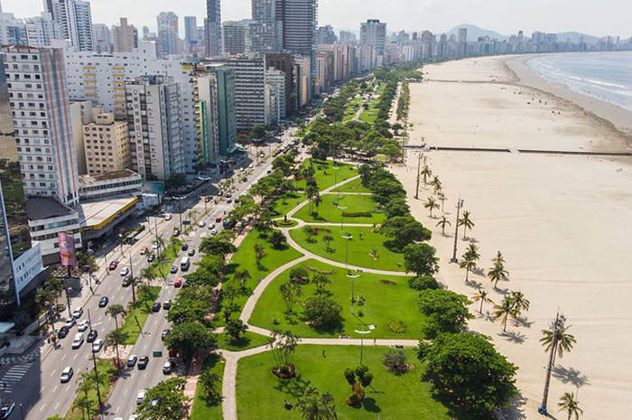
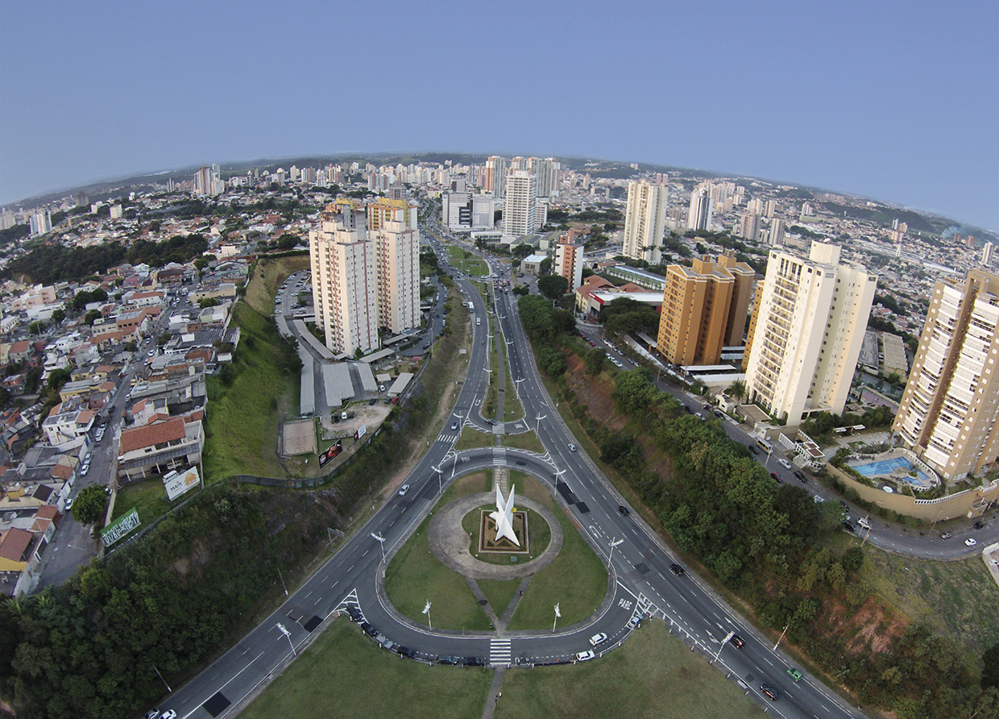
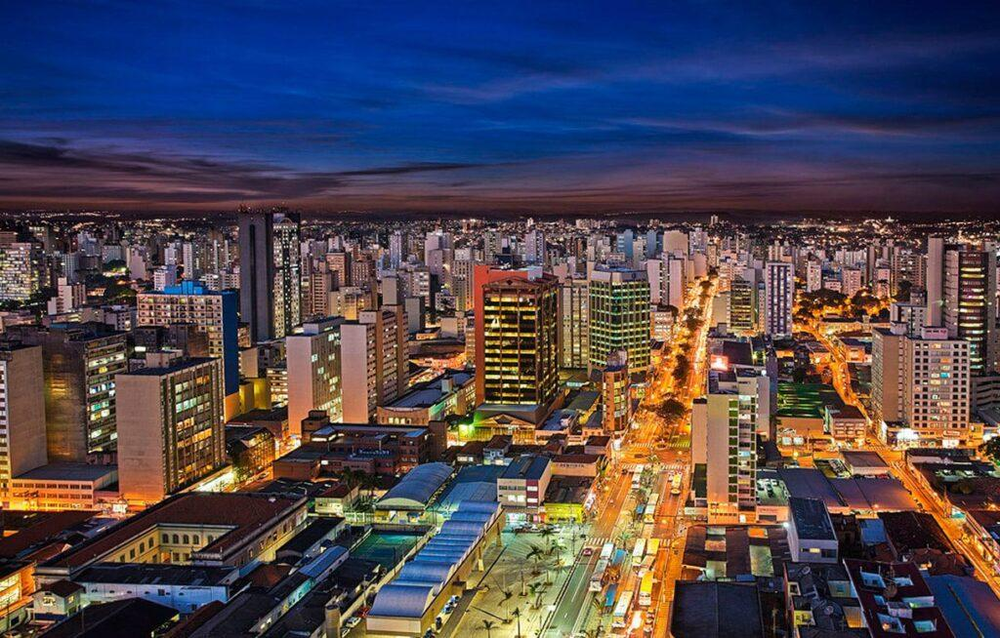
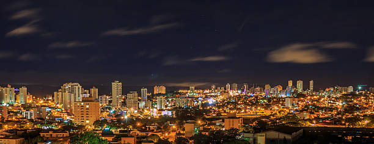
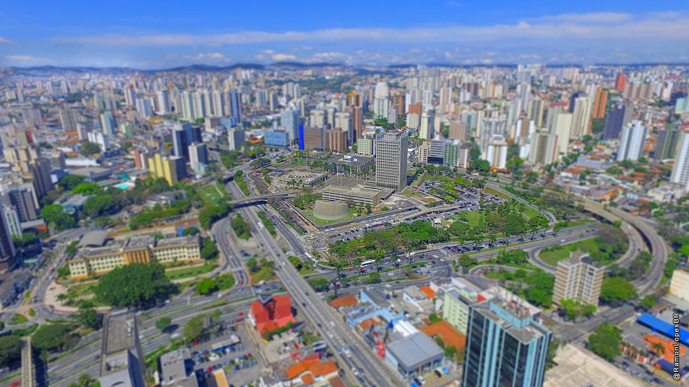

Um novo ranking das 10 cidades mais inteligentes do estado de São Paulo revelou quais municípios se destacam em inovação, sustentabilidade e qualidade de vida urbana. O levantamento considera indicadores como mobilidade urbana, governança digital, acesso à tecnologia, educação e infraestrutura. Cidades que investem em soluções tecnológicas para melhorar o bem-estar da população, reduzir o impacto ambiental e tornar a administração pública mais eficiente foram as que ocuparam os primeiros lugares no ranking.
Entre os destaques estão cidades como Campinas, São José dos Campos e Sorocaba, que vêm investindo fortemente em iniciativas de cidades inteligentes. Essas cidades contam com sistemas avançados de transporte público, iluminação pública inteligente, coleta de dados em tempo real e centros de inovação tecnológica. Além disso, possuem políticas públicas voltadas para a educação tecnológica, incentivo a startups e uso de dados para a tomada de decisões.
O ranking mostra ainda que o avanço das cidades inteligentes não está restrito à capital, São Paulo, que naturalmente figura entre as primeiras posições. Municípios de médio porte têm ganhado espaço ao adotar práticas modernas de gestão urbana. O estudo reforça que o desenvolvimento inteligente não depende apenas de tamanho ou orçamento, mas sim de planejamento estratégico, compromisso com a inovação e participação ativa da população nos processos decisórios.
A capital paulista é líder em inovação urbana no estado. Com sistemas integrados de transporte público, ciclovias e investimentos em mobilidade, São Paulo busca reduzir o trânsito e melhorar a qualidade de vida.
A cidade também se destaca em tecnologia e startups, abrigando centenas de hubs de inovação e empresas de tecnologia.
Na área de governança, tem avançado na digitalização de serviços públicos, tornando processos mais rápidos e acessíveis para o cidadão.
Com excelente qualidade de vida, São Caetano investe fortemente em educação e saúde pública. Sua rede municipal é referência nacional.
A cidade também apresenta alto nível de conectividade e segurança, com monitoramento inteligente em diversas regiões.
Outro ponto forte é a gestão eficiente: São Caetano tem uma das melhores notas em transparência e uso de recursos públicos no estado.
Barueri se tornou um polo tecnológico da Grande São Paulo, principalmente pela presença do bairro Alphaville.
Barueri se tornou um polo tecnológico da Grande São Paulo, principalmente pela presença do bairro Alphaville.
Além disso, Barueri investe em inclusão digital e formação profissional, aproximando a população do mercado de tecnologia.
Jaguariúna tem se destacado pelo seu planejamento urbano e preservação ambiental.
A cidade investe em energia limpa, mobilidade e coleta seletiva, buscando crescer de forma sustentável.
Além disso, abriga centros tecnológicos e faculdades que fomentam a inovação e a capacitação local.
Santana de Parnaíba vem modernizando sua administração com plataformas digitais que agilizam o atendimento à população.
A cidade também valoriza o patrimônio histórico ao mesmo tempo em que amplia investimentos em infraestrutura urbana.
Destaca-se ainda por ter boas políticas de mobilidade e desenvolvimento econômico regional.
Santos é exemplo em sustentabilidade e mobilidade urbana, com ciclovias bem distribuídas e transporte integrado.
A cidade portuária também investe em tecnologia para a gestão pública, com painéis de dados e sistemas inteligentes.
Na educação, tem projetos voltados para inovação, como o ensino de programação em escolas da rede municipal.
Jundiaí aposta em soluções digitais para a gestão da cidade, com aplicativos e plataformas que aproximam o cidadão da prefeitura.
Possui bons indicadores em saúde, educação e segurança, além de investir em tecnologia para melhorar os serviços públicos.
Também promove iniciativas voltadas para sustentabilidade e inovação urbana.
Campinas é uma das cidades mais inovadoras do Brasil, com universidades e centros de pesquisa renomados, como a Unicamp.
Tem forte atuação no setor de tecnologia e saúde, sendo sede de muitas startups e empresas de base científica.
A cidade também é referência em mobilidade e planejamento urbano inteligente.
Sorocaba tem se destacado por iniciativas sustentáveis, como ônibus elétricos e programas de arborização.
A cidade também aposta na modernização da administração pública com uso de dados e tecnologia.
Investimentos em educação e empreendedorismo ajudam a promover o crescimento tecnológico local.
Santo André avança na digitalização dos serviços públicos e na promoção de cidades inteligentes com foco no bem-estar social.
Tem projetos voltados para inclusão digital e capacitação profissional da população.
A cidade também aposta em mobilidade urbana e revitalização de espaços públicos, com planejamento urbano moderno.
